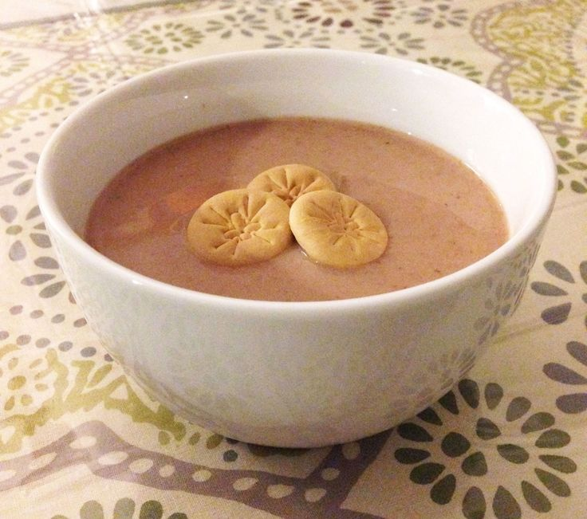

Filling Option: Beef, Chicken, and Cheese
Filling Option: Chicken & Beef
Fried yuca stuffed with meat or cheese filling


Our Menu is a journey through the diverse and delectable world of Dominican cuisine. From mouthwatering Mofonguitos and succulent Pica Pollo to the unforgettable flavors of Sancocho and Bandera Dominicana, every dish is a testament to the passion and tradition that define Dominican cooking. We source the finest ingredients and rely on time-honored recipes, ensuring that each bite us a culinary delight that transports you to the heart of the Caribbean.
Appetizers
| Pastelitos | Yaniqueque | Quipe |
|---|---|---|
| Fried pastry stuffed with meat or cheese filling | Fried pastry no filling | Fried wheat with ground meat filling |
| Served with Gralic Aioli Filling Option: Beef, Chicken, and Cheese | Served with Gralic Aioli | Served with Gralic Aioli Filling Option: Chicken & Beef |
| $6.99 | $3.99 | $7.99 |
| Chulitos de Yuca | Pastel en Hoja | Stewed Fish Balls |
| Fried yuca stuffed with meat or cheese filling | Plantain leaf pockets filled with meat filling | Ball shaped fish in traditional sauce |
| Filing Options: Beef, Chicken, and Cheese Fried yuca stuffed with meat or cheese filling | Filling Options: Chicken or Pork | Can request fried fish balls |
| $7.99 | $2.50 | $7.99 |
| Mofonguitos | Arepitas de Yuca | Shrimp & Avocado Stuffed Plantain Cups |
| | |
| Mini plantain cups filled with pulled pork topped with mayo and ketchup | Yuca fritters | Mini plantain cups filled with mashed avocado topped with shrimp |
| $9.99 | $3.50 | $9.99 |
Drinks
 |  | |
| Water | Country Club | Coke & Diet Coke |
|---|---|---|
| Free | $4.50 | $2.00 |
| Morir Soñando | Passion Fruit Juice | Lemonade |
| $5.00 | $5.00 | $5.00 |
Alcoholic Beverages
| Brugal | Mamajuana | Ponche |
|---|---|---|
| $15.00 | $12.50 | $10.00 |
 |  | |
| Presidente | Barceló Rum | Vino Tinto |
| $6.00 | $14.50 | $17.00 |
Brunch Menu
| Spaghetti | Chimi | Club Sandwich |
|---|---|---|
 | ||
| Spaghetti with Salami Chunks | Dominican Burger with Beef Paty, Red Onions, Cabbage, Tomato, and Pink Sauce | Club Sandwhich with Turkey, Ham, Cheese, Lettuce, Tomato, Mayo, and Ketchup |
| Served with Fried Plantain | Served with French Fries | Served with French Fries |
| $17.00 | $11.99 | $14.00 |
| Sancocho | Chofan | Salpicón de Marisco |
| Hearty stew made with root vegetables and meat | Dominican fried rice cooked with soy sauce, eggs, vegetables, and meat | Seafood salad that consist of calamari, octopus, conch, and shrimp |
| Served with White Rice and Avocado Slices | Served with Green Salad | Served with Toasted Mini Bread Slices |
| $13.00 | $14.50 | $17.00 |
| Mangú Con Los Tres Golpes | Asopao de Marisco | Yaroa |
 |  | |
| Traditional Dominican Breakfast | Dominican Seafood & Rice Stew | Chicken Loaded French Fries |
| Mashed Plantain With Fried Cheese, Salami, Fried Eggs, Fried Pickled Onions, and Avocado Slices | Mixture of Seafood Including Calamari, Octopus, Conch, and Shrimp and Rice | Shredded Chicken, French Fries, Cheese, Mayo, and Ketchup |
| $12.50 | $16.50 | $10.99 |
Children's Menu
| Salchipapa | Pechurina Con Papa | Hot Dogs |
|---|---|---|
| Dominican Loaded French Fries | Dominican Fried Chicken Strips | Dominican Style Hot Dog |
| French Fries with Hot Dog Slices, Mayo, Ketchup, and Cheese Sauce | Served with French Fries | Hot Dog is Topped with Cabbage, Cheese Sauce, Mayo, and Ketchup |
| $7.00 | $10.50 | $8.00 |
Dinner Menu
| Stewed Fish with Potatoes | Stewed Shrimp | Stewed Salted Codfish |
|---|---|---|
 | ||
| Sides: Rice & Avocado Salad | Sides: Rice & Side Salad | Sides: Rice & Fried Plantain |
| Swap Options: White Rice, Rice & Green Peas, And Rice & Black Beans | Swap Options: White Rice, Rice & Pink Beans, And Fried Plantains | Swap Options: White Rice And Rice & Red Kidney Beans |
| $28.99 | $25.50 | $23.00 |
| Fried Fish | Stewed Herring | Stewed Crab Meat |
 | ||
| Sides: Fried Plantain & Side Salad | Sides: Yuca & Avocado Slices | Sides: Rice, Fried Plantains, and Avocado Slices |
| Swap Options: Fried Yuca & French Fries | Swap Options: Boiled Plantains & White Rice | Swap Options: Stewed Red Kidney Beans & Pink Beans |
| $30.00 | $22.50 | $29.99 |
| Fried Chicken | Roasted Chicken | Stewed Chicken |
| Sides: White Rice, Stewed Beans, and Side Salad | Sides: White Rice, Stewed Red Kidney Beans, and Sweet Plantians | Sides: White Rice, Stewed Beans, and Fried Plantains |
| Swap Options: Stewed Black Bean, Stewed Red Kidney Beans, And Stewed Lentils | Swap Options: Fried Plantains, Fried Yuca Sticks, And Green Salad | Swap Options: Stewed Black Bean, Stewed Red Kidney Beans, And Pink Beans |
| $24.00 | $23.50 | $22.00 |
| Stewed Beef | Roasted Pork | Stewed Goat |
 | ||
| Sides: Rice & Avocado Green Salad | Sides: Rice & Side salad | Sides: White Rice, Stewed Beans, and Side Salad |
| Swap Options: White Rice, Rice & Green Peas, And Rice & Black Beans | Swap Options: White Rice, Rice & Red Kidney Beans, And Rice & Green Peas | Swap Options: Stewed Red Kidney Beans & Pink Beans |
| $26.00 | $25.50 | $29.00 |
Dessert
| Bizcocho De Tres Leches | Arroz Con Leche | Flan |
|---|---|---|
| Dominican Three-Milk Cake | Rice & Milk | Custard |
| Three Kinds of Milk: Evaporated Milk,Whole Milk, and Sweetened Condensed Milk | Made with Cinnamon, Milk, Rice, Sugar, and Salt | Made with Eggs, Whole Milk, and Sweetened Condensed Milk, and Vanilla |
| $12.00 | $9.50 | $10.99 |
| Habichuela Con Dulce | Arepa De Maiz | Pan De Batata |
|  | ||
| Red Bean Dessert | Cornmeal and Coconut Cake | Sweet Potato Cake |
| Made with Red Beans, Cinnamon, Nutmeg, Coconut Milk, Evaporated Milk, Raisins, Sugar, and Salt |
Made with Fine Cornmeal, Coconut Milk, Evaporated Milk, Whole Milk, Brown Butter, Raisins, Pumpkin Puree, and Brown Sugar | Made with Coconut, Sweet Potato, Cinnamon, Ginger, and Nutmeg |
| $11.00 | $12.50 | $11.50 |
| Dulce De Coco | Dulce De Tamarindo | Dulce De Leche Con Guayaba |
.jpg) | ||
| Coconut and Milk Dessert | Tamarind Candy | Milk Candy |
| Made with Tender Coconut Meat, Milk, and Sweetened Condensed Milk | Made with Tamarind Pulp, Water, and Sugar | Made with Milk, Sugar, and Guava Paste |
| $5.00 | $4.50 | $6.00 |